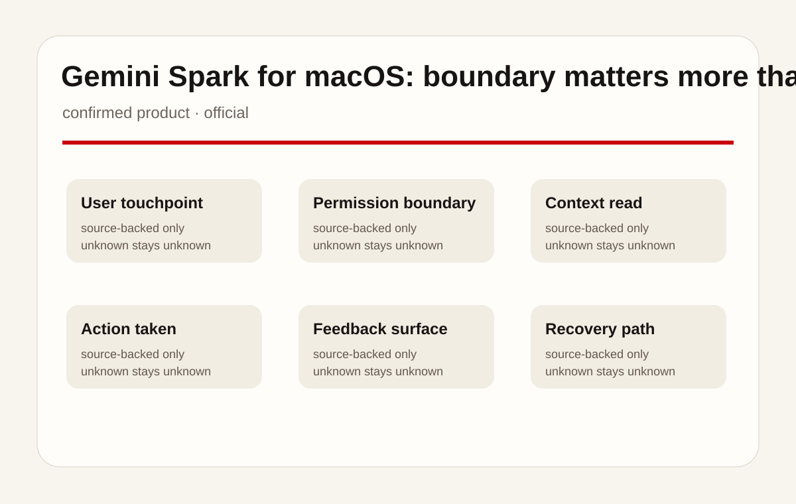
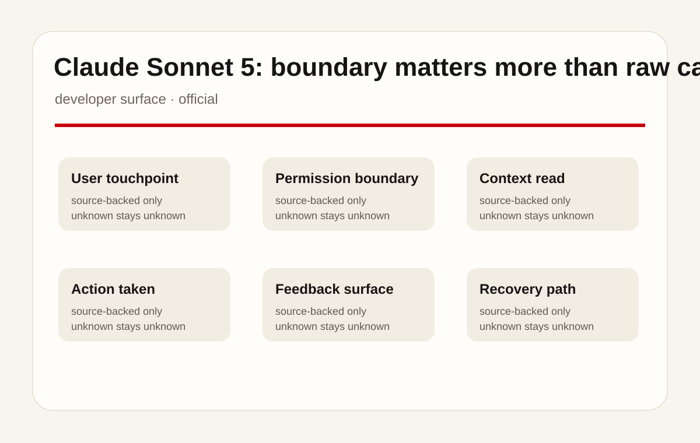
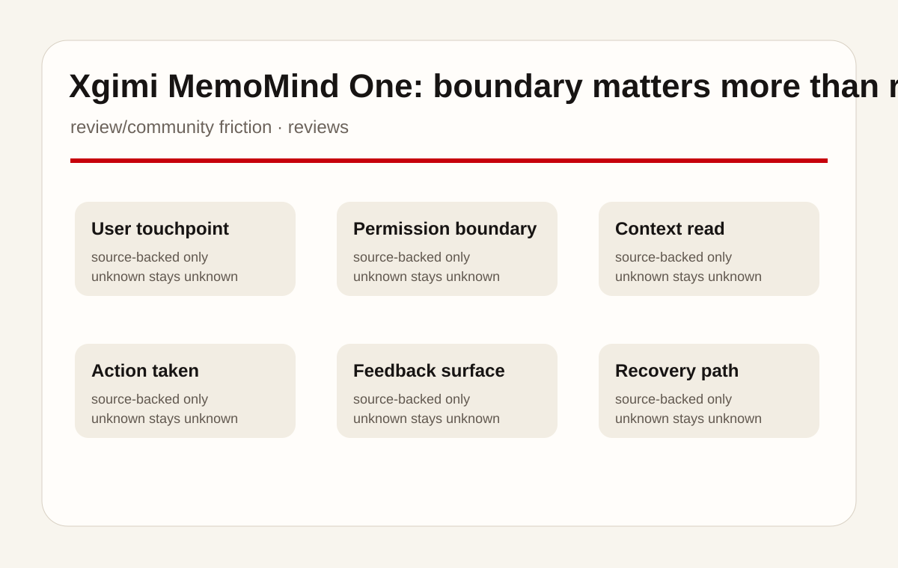
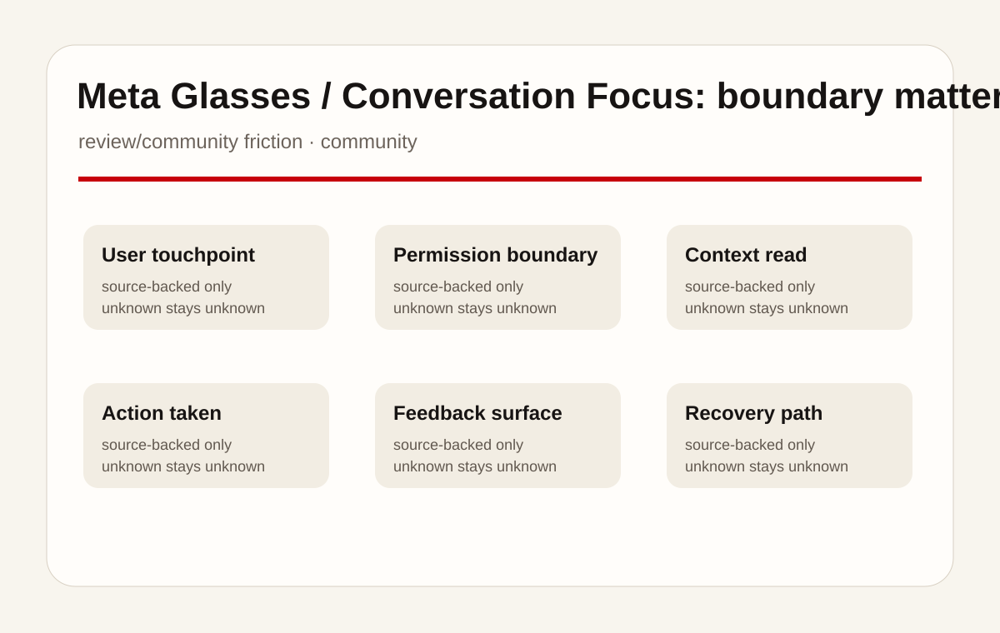
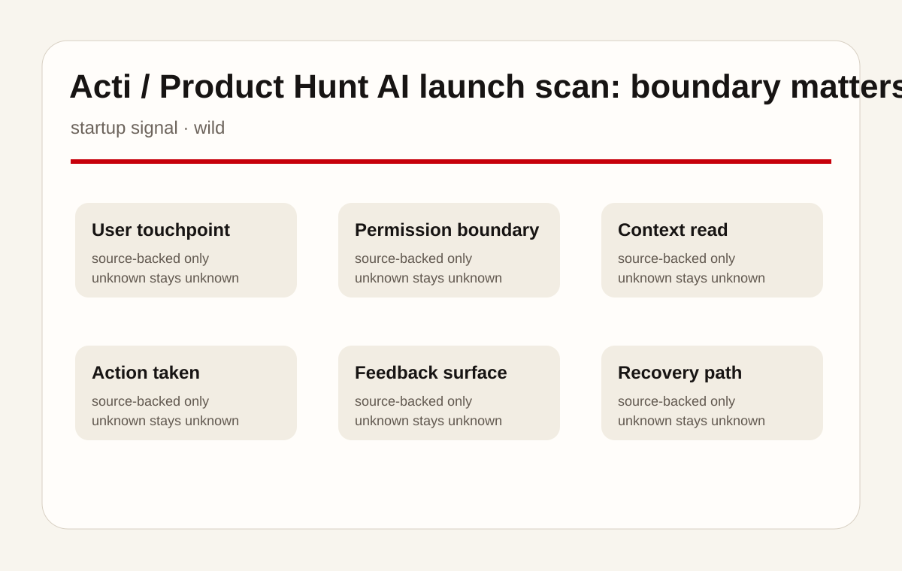
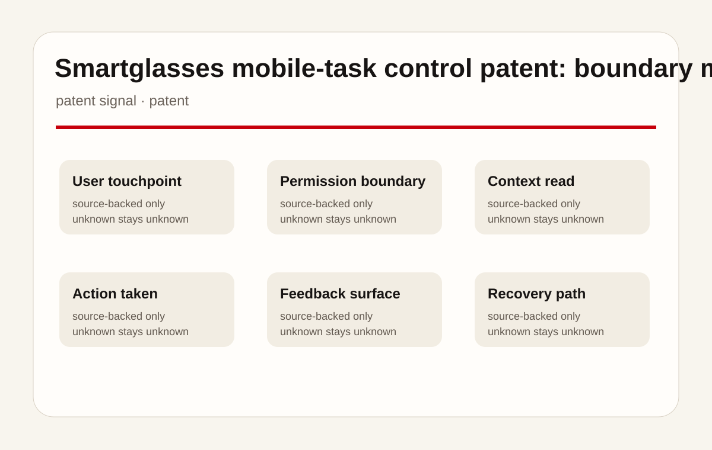
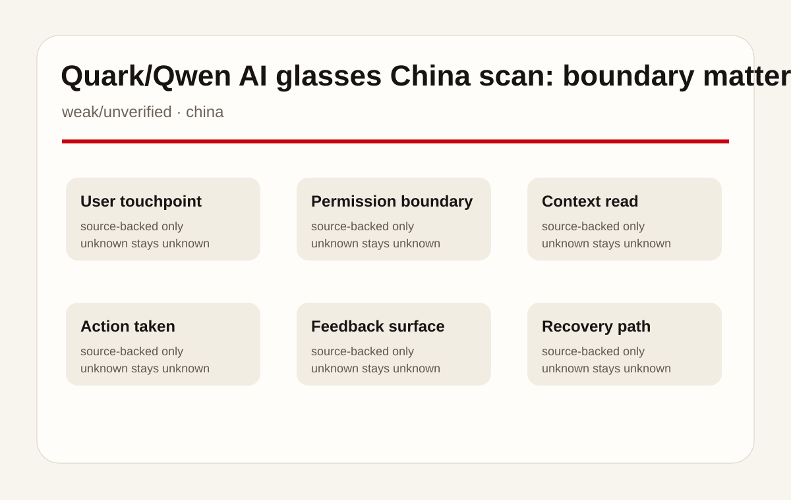
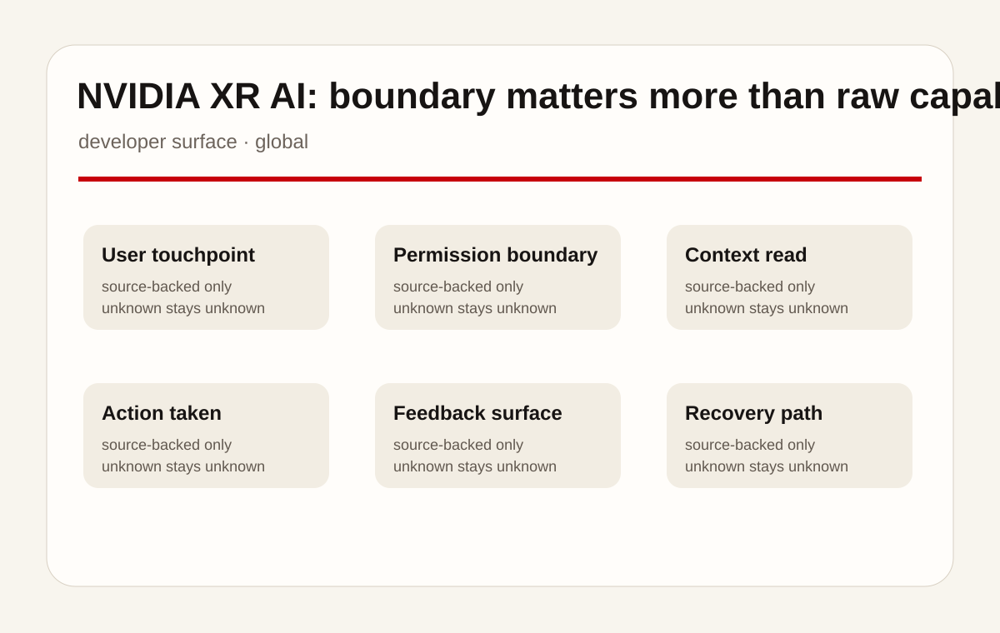

Gemini Spark for macOS 是本期按「confirmed product」处理的具体产品或信号面，产品类型是 桌面 agent / connected-app assistant。本期只记录来源支持的事实，不把模型能力、产业愿景或社区热度包装成已上市功能；规格、价格、地区、传感器、电池、芯片、OS/API 版本、用户 quote 若来源没有说明，一律写为 source not stated。
01
2026-07-01 · America/Toronto
AI Daily
桌面 Agent、科研 Workbench 与 AI 眼镜的边界测试
Gemini Spark 进入 Mac、本地文件、Workspace 和第三方 connected apps。
Claude Science 与 NVIDIA XR AI 显示 agent 正走向垂直工作台与空间现场。
Meta 眼镜提醒：硬件 AI 的订阅边界同样是产品体验。
HCIAI software productsAI hardwareagentic deviceson-device AIsmart glasses
来源： 封面原文

02
今日导航
先看结构，再看证据
今天按八条线读：官方产品、媒体评测、社区摩擦、野生产品、研究、专利、中国与海外。
03
大厂官方
大厂官方
Official Desk / 大厂官方
confirmed product · confirmed product
Gemini Spark for macOS：边界比能力更重要
confirmed product · confirmed product
Claude Science：边界比能力更重要
developer surface · developer surface
Claude Sonnet 5：边界比能力更重要
04
Official Desk / 大厂官方
大厂官方
confirmed product · confirmed product
scanned 2026-07-01
Gemini Spark for macOS：边界比能力更重要
产品: Gemini Spark for macOS. 用户可让 Spark 整理 Mac Downloads 里的 PDF、用本地 invoice 建预算表、从手机远程让 Mac 找销售报告并邮件回传，还可接入 Keep、Tasks、Canva、Dropbox、Instacart、OpenTable、Zillow Rentals 与 custom MCP。
交互流程：用户可让 Spark 整理 Mac Downloads 里的 PDF、用本地 invoice 建预算表、从手机远程让 Mac 找销售报告并邮件回传，还可接入 Keep、Tasks、Canva、Dropbox、Instacart、OpenTable、Zillow Rentals 与 custom MCP。 这说明用户第一触点正在从独立聊天框移到桌面、科研环境、眼镜、键盘、浏览器或多设备控制面。UX 核心是用户是否知道系统正在读取什么、准备做什么、做到哪一步、何时需要确认，以及错误后能否回退。
硬件/API/系统栈：Gemini macOS app、Google Workspace、本地文件权限、connected apps、custom MCP、real-time topic tracking。 本期不补写未披露参数；真正需要比较的是 stack 是否把模型、权限、文件/传感/数据库、外部工具和结果 UI 接成可检查闭环。若来源只写 beta、public beta、connected app、subscription 或 patent，本期也只按该强度处理。
具体用例围绕跨上下文代办：文件整理、预算表、科研文献和代码、眼镜翻译/拍摄/导航、AR 工厂/实验室/手术辅助、移动键盘命令、浏览器/桌面 agent、手机-眼镜任务控制和中国本地生活服务。高风险场景必须有确认、审计和撤销。
解决痛点是减少用户在文件、网页、科学数据库、HPC、手机、眼镜、企业 app、第三方服务和本地生活生态之间搬运上下文的成本。系统承担复杂性，但不能隐藏边界；否则代办能力越强，用户越难信任。
评测/社区/用户信号按来源降级读取。The Verge 和 TechCrunch 用来识别摩擦与 workflow 价值，Product Hunt 只代表早期 launch 兴趣，论文参与者不是消费者市场，中文媒体提供中国生态观察。没有直接用户 quote 的项目写 source not stated。
新技术在于 agentic execution、connected apps、custom MCP、auditable artifacts、reviewer agent、AR/XR multimodal sensing、on-device feature monetization、camera-free display、keyboard-as-entry、computer-use UX、smartglasses patent control 和 Qwen glasses ecosystem。
可用性按来源记录；英文可用性摘要：Beta for Google AI Ultra subscribers aged 18+ starting in the US; connected apps roll out first on web/mobile and later on macOS. 未披露地区、库存、长期支持、生产客户、下载范围、许可和企业默认策略均 source not stated。
限制/未知包括端侧/云端比例、隐私保留期、文件权限 UI、远程任务失败恢复、审计日志、撤销路径、长期佩戴舒适度、订阅边界是否扩大、研究样本外推、专利是否产品化和中国生态的海外适配。
产品判断：Gemini Spark for macOS 的价值不在“又有 AI”，而在是否把用户目标转成可控行动。下一步要验证入口、权限、上下文、执行、反馈、停止和恢复七个触点。缺一个，产品就会从 assistant 退化成黑箱自动化。
05
Official Desk / 大厂官方
大厂官方
confirmed product · confirmed product
scanned 2026-07-01
Claude Science：边界比能力更重要
产品: Claude Science. 研究者在 macOS/Linux、本地机器、SSH 或 HPC login node 上工作；generalist coordinating agent 调用 60+ skills/connectors，生成蛋白结构、genome tracks、chemical structures、代码和 manuscript，并由 reviewer agent 检查 citation、calculation 和 figure-code 一致性。
Claude Science 是本期按「confirmed product」处理的具体产品或信号面，产品类型是 科学家 AI workbench。本期只记录来源支持的事实，不把模型能力、产业愿景或社区热度包装成已上市功能；规格、价格、地区、传感器、电池、芯片、OS/API 版本、用户 quote 若来源没有说明，一律写为 source not stated。
交互流程：研究者在 macOS/Linux、本地机器、SSH 或 HPC login node 上工作；generalist coordinating agent 调用 60+ skills/connectors，生成蛋白结构、genome tracks、chemical structures、代码和 manuscript，并由 reviewer agent 检查 citation、calculation 和 figure-code 一致性。 这说明用户第一触点正在从独立聊天框移到桌面、科研环境、眼镜、键盘、浏览器或多设备控制面。UX 核心是用户是否知道系统正在读取什么、准备做什么、做到哪一步、何时需要确认，以及错误后能否回退。
硬件/API/系统栈：Claude Pro/Max/Team/Enterprise beta、macOS/Linux、本地/HPC/Modal compute、NVIDIA BioNeMo Agent Toolkit、UniProt/PDB/Ensembl/Reactome/ClinVar/ChEMBL/GEO。 本期不补写未披露参数；真正需要比较的是 stack 是否把模型、权限、文件/传感/数据库、外部工具和结果 UI 接成可检查闭环。若来源只写 beta、public beta、connected app、subscription 或 patent，本期也只按该强度处理。
具体用例围绕跨上下文代办：文件整理、预算表、科研文献和代码、眼镜翻译/拍摄/导航、AR 工厂/实验室/手术辅助、移动键盘命令、浏览器/桌面 agent、手机-眼镜任务控制和中国本地生活服务。高风险场景必须有确认、审计和撤销。
解决痛点是减少用户在文件、网页、科学数据库、HPC、手机、眼镜、企业 app、第三方服务和本地生活生态之间搬运上下文的成本。系统承担复杂性，但不能隐藏边界；否则代办能力越强，用户越难信任。
评测/社区/用户信号按来源降级读取。The Verge 和 TechCrunch 用来识别摩擦与 workflow 价值，Product Hunt 只代表早期 launch 兴趣，论文参与者不是消费者市场，中文媒体提供中国生态观察。没有直接用户 quote 的项目写 source not stated。
新技术在于 agentic execution、connected apps、custom MCP、auditable artifacts、reviewer agent、AR/XR multimodal sensing、on-device feature monetization、camera-free display、keyboard-as-entry、computer-use UX、smartglasses patent control 和 Qwen glasses ecosystem。
可用性按来源记录；英文可用性摘要：Beta for Pro, Max, Team, and Enterprise; Team and Enterprise need admin enablement; project applications open until July 15, 2026. 未披露地区、库存、长期支持、生产客户、下载范围、许可和企业默认策略均 source not stated。
限制/未知包括端侧/云端比例、隐私保留期、文件权限 UI、远程任务失败恢复、审计日志、撤销路径、长期佩戴舒适度、订阅边界是否扩大、研究样本外推、专利是否产品化和中国生态的海外适配。
产品判断：Claude Science 的价值不在“又有 AI”，而在是否把用户目标转成可控行动。下一步要验证入口、权限、上下文、执行、反馈、停止和恢复七个触点。缺一个，产品就会从 assistant 退化成黑箱自动化。
06
Official Desk / 大厂官方
大厂官方
developer surface · developer surface
scanned 2026-07-01
Claude Sonnet 5：边界比能力更重要
产品: Claude Sonnet 5. 用户或开发者在 Claude、Claude Code 或 API 中选择 Sonnet 5，按 effort level 在成本与性能间调节，模型可规划、调用 browser/terminal/tools、执行多步 coding、search 和 computer-use 任务。

Claude Sonnet 5 是本期按「developer surface」处理的具体产品或信号面，产品类型是 agentic model/API/Claude Code surface。本期只记录来源支持的事实，不把模型能力、产业愿景或社区热度包装成已上市功能；规格、价格、地区、传感器、电池、芯片、OS/API 版本、用户 quote 若来源没有说明，一律写为 source not stated。
交互流程：用户或开发者在 Claude、Claude Code 或 API 中选择 Sonnet 5，按 effort level 在成本与性能间调节，模型可规划、调用 browser/terminal/tools、执行多步 coding、search 和 computer-use 任务。 这说明用户第一触点正在从独立聊天框移到桌面、科研环境、眼镜、键盘、浏览器或多设备控制面。UX 核心是用户是否知道系统正在读取什么、准备做什么、做到哪一步、何时需要确认，以及错误后能否回退。
硬件/API/系统栈：Free/Pro default、Max/Team/Enterprise、Claude Code、Claude Platform、claude-sonnet-5 API、intro pricing $2/$10 per MTok until August 31 then $3/$15 per MTok。 本期不补写未披露参数；真正需要比较的是 stack 是否把模型、权限、文件/传感/数据库、外部工具和结果 UI 接成可检查闭环。若来源只写 beta、public beta、connected app、subscription 或 patent，本期也只按该强度处理。
具体用例围绕跨上下文代办：文件整理、预算表、科研文献和代码、眼镜翻译/拍摄/导航、AR 工厂/实验室/手术辅助、移动键盘命令、浏览器/桌面 agent、手机-眼镜任务控制和中国本地生活服务。高风险场景必须有确认、审计和撤销。
解决痛点是减少用户在文件、网页、科学数据库、HPC、手机、眼镜、企业 app、第三方服务和本地生活生态之间搬运上下文的成本。系统承担复杂性，但不能隐藏边界；否则代办能力越强，用户越难信任。
评测/社区/用户信号按来源降级读取。The Verge 和 TechCrunch 用来识别摩擦与 workflow 价值，Product Hunt 只代表早期 launch 兴趣，论文参与者不是消费者市场，中文媒体提供中国生态观察。没有直接用户 quote 的项目写 source not stated。
新技术在于 agentic execution、connected apps、custom MCP、auditable artifacts、reviewer agent、AR/XR multimodal sensing、on-device feature monetization、camera-free display、keyboard-as-entry、computer-use UX、smartglasses patent control 和 Qwen glasses ecosystem。
可用性按来源记录；英文可用性摘要：Available across plans from June 30, 2026; API name claude-sonnet-5; regional limitations are source not stated. 未披露地区、库存、长期支持、生产客户、下载范围、许可和企业默认策略均 source not stated。
限制/未知包括端侧/云端比例、隐私保留期、文件权限 UI、远程任务失败恢复、审计日志、撤销路径、长期佩戴舒适度、订阅边界是否扩大、研究样本外推、专利是否产品化和中国生态的海外适配。
产品判断：Claude Sonnet 5 的价值不在“又有 AI”，而在是否把用户目标转成可控行动。下一步要验证入口、权限、上下文、执行、反馈、停止和恢复七个触点。缺一个，产品就会从 assistant 退化成黑箱自动化。
07
媒体/评测
媒体/评测
Review Desk / 媒体与评测
review/community friction · review/community friction
Xgimi MemoMind One：边界比能力更重要
08
Review Desk / 媒体与评测
媒体/评测
review/community friction · review/community friction
scanned 2026-07-01
Xgimi MemoMind One：边界比能力更重要
产品: Xgimi MemoMind One. 佩戴者看到仅自己可见的绿色 micro-LED floating display，使用天气、日历、新闻、basic AI assistant、录音转写、teleprompter、captioning 和 live translation；部分翻译/导航需要从手机 app 开始。

Xgimi MemoMind One 是本期按「review/community friction」处理的具体产品或信号面，产品类型是 camera-free AI smart glasses review signal。本期只记录来源支持的事实，不把模型能力、产业愿景或社区热度包装成已上市功能；规格、价格、地区、传感器、电池、芯片、OS/API 版本、用户 quote 若来源没有说明，一律写为 source not stated。
交互流程：佩戴者看到仅自己可见的绿色 micro-LED floating display，使用天气、日历、新闻、basic AI assistant、录音转写、teleprompter、captioning 和 live translation；部分翻译/导航需要从手机 app 开始。 这说明用户第一触点正在从独立聊天框移到桌面、科研环境、眼镜、键盘、浏览器或多设备控制面。UX 核心是用户是否知道系统正在读取什么、准备做什么、做到哪一步、何时需要确认，以及错误后能否回退。
硬件/API/系统栈：camera-free frame、micro-LED display、mobile app、voice recording/transcription、Listen-in mode、up to 16 hours use、$599 retail / $879 prescription lenses according to The Verge。 本期不补写未披露参数；真正需要比较的是 stack 是否把模型、权限、文件/传感/数据库、外部工具和结果 UI 接成可检查闭环。若来源只写 beta、public beta、connected app、subscription 或 patent，本期也只按该强度处理。
具体用例围绕跨上下文代办：文件整理、预算表、科研文献和代码、眼镜翻译/拍摄/导航、AR 工厂/实验室/手术辅助、移动键盘命令、浏览器/桌面 agent、手机-眼镜任务控制和中国本地生活服务。高风险场景必须有确认、审计和撤销。
解决痛点是减少用户在文件、网页、科学数据库、HPC、手机、眼镜、企业 app、第三方服务和本地生活生态之间搬运上下文的成本。系统承担复杂性，但不能隐藏边界；否则代办能力越强，用户越难信任。
评测/社区/用户信号按来源降级读取。The Verge 和 TechCrunch 用来识别摩擦与 workflow 价值，Product Hunt 只代表早期 launch 兴趣，论文参与者不是消费者市场，中文媒体提供中国生态观察。没有直接用户 quote 的项目写 source not stated。
新技术在于 agentic execution、connected apps、custom MCP、auditable artifacts、reviewer agent、AR/XR multimodal sensing、on-device feature monetization、camera-free display、keyboard-as-entry、computer-use UX、smartglasses patent control 和 Qwen glasses ecosystem。
可用性按来源记录；英文可用性摘要：CES 2026 reveal and Kickstarter launch signal; final delivery, support, and production quality are source not stated. 未披露地区、库存、长期支持、生产客户、下载范围、许可和企业默认策略均 source not stated。
限制/未知包括端侧/云端比例、隐私保留期、文件权限 UI、远程任务失败恢复、审计日志、撤销路径、长期佩戴舒适度、订阅边界是否扩大、研究样本外推、专利是否产品化和中国生态的海外适配。
产品判断：Xgimi MemoMind One 的价值不在“又有 AI”，而在是否把用户目标转成可控行动。下一步要验证入口、权限、上下文、执行、反馈、停止和恢复七个触点。缺一个，产品就会从 assistant 退化成黑箱自动化。
09
社区摩擦
社区摩擦
Community Friction / 社区摩擦
review/community friction · review/community friction
Meta Glasses / Conversation Focus：边界比能力更重要
10
Community Friction / 社区摩擦
社区摩擦
review/community friction · review/community friction
scanned 2026-07-01
Meta Glasses / Conversation Focus：边界比能力更重要
产品: Meta Glasses / Conversation Focus. 用户佩戴 Meta Glasses，通过 action button 调用 Meta AI、拍摄、开放式音频、翻译和导航；The Verge 报道 Conversation Focus 将有免费月度时长限制，Premium 订阅提供更高时长。

Meta Glasses / Conversation Focus 是本期按「review/community friction」处理的具体产品或信号面，产品类型是 AI 眼镜硬件与订阅摩擦。本期只记录来源支持的事实，不把模型能力、产业愿景或社区热度包装成已上市功能；规格、价格、地区、传感器、电池、芯片、OS/API 版本、用户 quote 若来源没有说明，一律写为 source not stated。
交互流程：用户佩戴 Meta Glasses，通过 action button 调用 Meta AI、拍摄、开放式音频、翻译和导航；The Verge 报道 Conversation Focus 将有免费月度时长限制，Premium 订阅提供更高时长。 这说明用户第一触点正在从独立聊天框移到桌面、科研环境、眼镜、键盘、浏览器或多设备控制面。UX 核心是用户是否知道系统正在读取什么、准备做什么、做到哪一步、何时需要确认，以及错误后能否回退。
硬件/API/系统栈：Meta Glasses、Muse Spark、26 styles、prescription lenses、open-ear speakers、multi-mic array、over 8 hours battery、40 hours charging case；Conversation Focus 使用 beamforming/spatial processing。 本期不补写未披露参数；真正需要比较的是 stack 是否把模型、权限、文件/传感/数据库、外部工具和结果 UI 接成可检查闭环。若来源只写 beta、public beta、connected app、subscription 或 patent，本期也只按该强度处理。
具体用例围绕跨上下文代办：文件整理、预算表、科研文献和代码、眼镜翻译/拍摄/导航、AR 工厂/实验室/手术辅助、移动键盘命令、浏览器/桌面 agent、手机-眼镜任务控制和中国本地生活服务。高风险场景必须有确认、审计和撤销。
解决痛点是减少用户在文件、网页、科学数据库、HPC、手机、眼镜、企业 app、第三方服务和本地生活生态之间搬运上下文的成本。系统承担复杂性，但不能隐藏边界；否则代办能力越强，用户越难信任。
评测/社区/用户信号按来源降级读取。The Verge 和 TechCrunch 用来识别摩擦与 workflow 价值，Product Hunt 只代表早期 launch 兴趣，论文参与者不是消费者市场，中文媒体提供中国生态观察。没有直接用户 quote 的项目写 source not stated。
新技术在于 agentic execution、connected apps、custom MCP、auditable artifacts、reviewer agent、AR/XR multimodal sensing、on-device feature monetization、camera-free display、keyboard-as-entry、computer-use UX、smartglasses patent control 和 Qwen glasses ecosystem。
可用性按来源记录；英文可用性摘要：Meta Glasses are available in several countries from Meta.com and retailers; complete country table and stock are source not stated. 未披露地区、库存、长期支持、生产客户、下载范围、许可和企业默认策略均 source not stated。
限制/未知包括端侧/云端比例、隐私保留期、文件权限 UI、远程任务失败恢复、审计日志、撤销路径、长期佩戴舒适度、订阅边界是否扩大、研究样本外推、专利是否产品化和中国生态的海外适配。
产品判断：Meta Glasses / Conversation Focus 的价值不在“又有 AI”，而在是否把用户目标转成可控行动。下一步要验证入口、权限、上下文、执行、反馈、停止和恢复七个触点。缺一个，产品就会从 assistant 退化成黑箱自动化。
11
野生信号
野生信号
Wild Desk / 野生信号
startup signal · startup signal
Acti / Product Hunt AI launch scan：边界比能力更重要
12
Wild Desk / 野生信号
野生信号
startup signal · startup signal
scanned 2026-07-01
Acti / Product Hunt AI launch scan：边界比能力更重要
产品: Acti / Product Hunt AI launch scan. 用户在移动键盘里触发 command/search；开发者或 agent builder 通过 Humalike 类型 API 增加 social intelligence；这些是 launch-page signals，不是经过长期验证的产品事实。

Acti / Product Hunt AI launch scan 是本期按「startup signal」处理的具体产品或信号面，产品类型是 Product Hunt wild signal scan。本期只记录来源支持的事实，不把模型能力、产业愿景或社区热度包装成已上市功能；规格、价格、地区、传感器、电池、芯片、OS/API 版本、用户 quote 若来源没有说明，一律写为 source not stated。
交互流程：用户在移动键盘里触发 command/search；开发者或 agent builder 通过 Humalike 类型 API 增加 social intelligence；这些是 launch-page signals，不是经过长期验证的产品事实。 这说明用户第一触点正在从独立聊天框移到桌面、科研环境、眼镜、键盘、浏览器或多设备控制面。UX 核心是用户是否知道系统正在读取什么、准备做什么、做到哪一步、何时需要确认，以及错误后能否回退。
硬件/API/系统栈：Product Hunt 首页列出 Acti、Humalike、Adam CAD Copilot 等今日产品；官方技术栈、隐私、价格、平台、用户规模 source not stated。 本期不补写未披露参数；真正需要比较的是 stack 是否把模型、权限、文件/传感/数据库、外部工具和结果 UI 接成可检查闭环。若来源只写 beta、public beta、connected app、subscription 或 patent，本期也只按该强度处理。
具体用例围绕跨上下文代办：文件整理、预算表、科研文献和代码、眼镜翻译/拍摄/导航、AR 工厂/实验室/手术辅助、移动键盘命令、浏览器/桌面 agent、手机-眼镜任务控制和中国本地生活服务。高风险场景必须有确认、审计和撤销。
解决痛点是减少用户在文件、网页、科学数据库、HPC、手机、眼镜、企业 app、第三方服务和本地生活生态之间搬运上下文的成本。系统承担复杂性，但不能隐藏边界；否则代办能力越强，用户越难信任。
评测/社区/用户信号按来源降级读取。The Verge 和 TechCrunch 用来识别摩擦与 workflow 价值，Product Hunt 只代表早期 launch 兴趣，论文参与者不是消费者市场，中文媒体提供中国生态观察。没有直接用户 quote 的项目写 source not stated。
新技术在于 agentic execution、connected apps、custom MCP、auditable artifacts、reviewer agent、AR/XR multimodal sensing、on-device feature monetization、camera-free display、keyboard-as-entry、computer-use UX、smartglasses patent control 和 Qwen glasses ecosystem。
可用性按来源记录；英文可用性摘要：Visible on Product Hunt today; actual download regions, review status, and maintenance are source not stated. 未披露地区、库存、长期支持、生产客户、下载范围、许可和企业默认策略均 source not stated。
限制/未知包括端侧/云端比例、隐私保留期、文件权限 UI、远程任务失败恢复、审计日志、撤销路径、长期佩戴舒适度、订阅边界是否扩大、研究样本外推、专利是否产品化和中国生态的海外适配。
产品判断：Acti / Product Hunt AI launch scan 的价值不在“又有 AI”，而在是否把用户目标转成可控行动。下一步要验证入口、权限、上下文、执行、反馈、停止和恢复七个触点。缺一个，产品就会从 assistant 退化成黑箱自动化。
13
论文
论文
Research Watch / 论文
research signal · research signal
Computer-use agent UX research：边界比能力更重要
14
Research Watch / 论文
论文
research signal · research signal
scanned 2026-07-01
Computer-use agent UX research：边界比能力更重要
产品: Computer-use agent UX research. 用户给出目标，agent 观察屏幕/UI、计划、点击、输入和导航，研究通过系统分析、practitioner interviews 和 Wizard-of-Oz study 观察用户如何监督/纠正 agent。
Computer-use agent UX research 是本期按「research signal」处理的具体产品或信号面，产品类型是 computer-use agents 交互研究。本期只记录来源支持的事实，不把模型能力、产业愿景或社区热度包装成已上市功能；规格、价格、地区、传感器、电池、芯片、OS/API 版本、用户 quote 若来源没有说明，一律写为 source not stated。
交互流程：用户给出目标，agent 观察屏幕/UI、计划、点击、输入和导航，研究通过系统分析、practitioner interviews 和 Wizard-of-Oz study 观察用户如何监督/纠正 agent。 这说明用户第一触点正在从独立聊天框移到桌面、科研环境、眼镜、键盘、浏览器或多设备控制面。UX 核心是用户是否知道系统正在读取什么、准备做什么、做到哪一步、何时需要确认，以及错误后能否回退。
硬件/API/系统栈：论文扫描 9 个 2024/2025 computer-use agents，访谈 8 名 UX/AI practitioners，20 名参与者 Wizard-of-Oz study；ACM browser-agent 论文作为相关研究面。 本期不补写未披露参数；真正需要比较的是 stack 是否把模型、权限、文件/传感/数据库、外部工具和结果 UI 接成可检查闭环。若来源只写 beta、public beta、connected app、subscription 或 patent，本期也只按该强度处理。
具体用例围绕跨上下文代办：文件整理、预算表、科研文献和代码、眼镜翻译/拍摄/导航、AR 工厂/实验室/手术辅助、移动键盘命令、浏览器/桌面 agent、手机-眼镜任务控制和中国本地生活服务。高风险场景必须有确认、审计和撤销。
解决痛点是减少用户在文件、网页、科学数据库、HPC、手机、眼镜、企业 app、第三方服务和本地生活生态之间搬运上下文的成本。系统承担复杂性，但不能隐藏边界；否则代办能力越强，用户越难信任。
评测/社区/用户信号按来源降级读取。The Verge 和 TechCrunch 用来识别摩擦与 workflow 价值，Product Hunt 只代表早期 launch 兴趣，论文参与者不是消费者市场，中文媒体提供中国生态观察。没有直接用户 quote 的项目写 source not stated。
新技术在于 agentic execution、connected apps、custom MCP、auditable artifacts、reviewer agent、AR/XR multimodal sensing、on-device feature monetization、camera-free display、keyboard-as-entry、computer-use UX、smartglasses patent control 和 Qwen glasses ecosystem。
可用性按来源记录；英文可用性摘要：Paper/preprint available; no commercial product availability applies. 未披露地区、库存、长期支持、生产客户、下载范围、许可和企业默认策略均 source not stated。
限制/未知包括端侧/云端比例、隐私保留期、文件权限 UI、远程任务失败恢复、审计日志、撤销路径、长期佩戴舒适度、订阅边界是否扩大、研究样本外推、专利是否产品化和中国生态的海外适配。
产品判断：Computer-use agent UX research 的价值不在“又有 AI”，而在是否把用户目标转成可控行动。下一步要验证入口、权限、上下文、执行、反馈、停止和恢复七个触点。缺一个，产品就会从 assistant 退化成黑箱自动化。
15
专利
专利
Patent Watch / 专利
patent signal · patent signal
Smartglasses mobile-task control patent：边界比能力更重要
16
Patent Watch / 专利
专利
patent signal · patent signal
scanned 2026-07-01
Smartglasses mobile-task control patent：边界比能力更重要
产品: Smartglasses mobile-task control patent. 眼镜、手机和手表配对后，系统通过 connection manager/control panel 管理任务、应用和 AR information；AI 可能帮助选择或控制要显示的信息。

Smartglasses mobile-task control patent 是本期按「patent signal」处理的具体产品或信号面，产品类型是 智能眼镜/手机/手表协同专利信号。本期只记录来源支持的事实，不把模型能力、产业愿景或社区热度包装成已上市功能；规格、价格、地区、传感器、电池、芯片、OS/API 版本、用户 quote 若来源没有说明，一律写为 source not stated。
交互流程：眼镜、手机和手表配对后，系统通过 connection manager/control panel 管理任务、应用和 AR information；AI 可能帮助选择或控制要显示的信息。 这说明用户第一触点正在从独立聊天框移到桌面、科研环境、眼镜、键盘、浏览器或多设备控制面。UX 核心是用户是否知道系统正在读取什么、准备做什么、做到哪一步、何时需要确认，以及错误后能否回退。
硬件/API/系统栈：smartglasses、smartwatch、smartphone、connection manager、control panel、AI control、mobile device tasks、applications、AR information。 本期不补写未披露参数；真正需要比较的是 stack 是否把模型、权限、文件/传感/数据库、外部工具和结果 UI 接成可检查闭环。若来源只写 beta、public beta、connected app、subscription 或 patent，本期也只按该强度处理。
具体用例围绕跨上下文代办：文件整理、预算表、科研文献和代码、眼镜翻译/拍摄/导航、AR 工厂/实验室/手术辅助、移动键盘命令、浏览器/桌面 agent、手机-眼镜任务控制和中国本地生活服务。高风险场景必须有确认、审计和撤销。
解决痛点是减少用户在文件、网页、科学数据库、HPC、手机、眼镜、企业 app、第三方服务和本地生活生态之间搬运上下文的成本。系统承担复杂性，但不能隐藏边界；否则代办能力越强，用户越难信任。
评测/社区/用户信号按来源降级读取。The Verge 和 TechCrunch 用来识别摩擦与 workflow 价值，Product Hunt 只代表早期 launch 兴趣，论文参与者不是消费者市场，中文媒体提供中国生态观察。没有直接用户 quote 的项目写 source not stated。
新技术在于 agentic execution、connected apps、custom MCP、auditable artifacts、reviewer agent、AR/XR multimodal sensing、on-device feature monetization、camera-free display、keyboard-as-entry、computer-use UX、smartglasses patent control 和 Qwen glasses ecosystem。
可用性按来源记录；英文可用性摘要：No product availability; patent publication or grant is not a launch. 未披露地区、库存、长期支持、生产客户、下载范围、许可和企业默认策略均 source not stated。
限制/未知包括端侧/云端比例、隐私保留期、文件权限 UI、远程任务失败恢复、审计日志、撤销路径、长期佩戴舒适度、订阅边界是否扩大、研究样本外推、专利是否产品化和中国生态的海外适配。
产品判断：Smartglasses mobile-task control patent 的价值不在“又有 AI”，而在是否把用户目标转成可控行动。下一步要验证入口、权限、上下文、执行、反馈、停止和恢复七个触点。缺一个，产品就会从 assistant 退化成黑箱自动化。
17
中国
中国
China / Global Compare
weak/unverified · weak/unverified
Quark/Qwen AI glasses China scan：边界比能力更重要
18
China / Global Compare
中国
weak/unverified · weak/unverified
scanned 2026-07-01
Quark/Qwen AI glasses China scan：边界比能力更重要
产品: Quark/Qwen AI glasses China scan. 用户通过夸克/千问眼镜唤起语音助手、看显示、拍摄、翻译、提词、导航，生态连接支付宝、高德、淘宝、飞猪和阿里商旅；后续 OTA 增加 proactive AI 和更多本地服务。

Quark/Qwen AI glasses China scan 是本期按「weak/unverified」处理的具体产品或信号面，产品类型是 中国 AI 眼镜生态 scan。本期只记录来源支持的事实，不把模型能力、产业愿景或社区热度包装成已上市功能；规格、价格、地区、传感器、电池、芯片、OS/API 版本、用户 quote 若来源没有说明，一律写为 source not stated。
交互流程：用户通过夸克/千问眼镜唤起语音助手、看显示、拍摄、翻译、提词、导航，生态连接支付宝、高德、淘宝、飞猪和阿里商旅；后续 OTA 增加 proactive AI 和更多本地服务。 这说明用户第一触点正在从独立聊天框移到桌面、科研环境、眼镜、键盘、浏览器或多设备控制面。UX 核心是用户是否知道系统正在读取什么、准备做什么、做到哪一步、何时需要确认，以及错误后能否回退。
硬件/API/系统栈：S1/G1 两系列、S1 起价 3799 元、G1 起价 1899 元、双目显示/双旗舰芯片/4000 nits/五麦阵列等细节来自新华社/量子位等来源；海外可买性 source not stated。 本期不补写未披露参数；真正需要比较的是 stack 是否把模型、权限、文件/传感/数据库、外部工具和结果 UI 接成可检查闭环。若来源只写 beta、public beta、connected app、subscription 或 patent，本期也只按该强度处理。
具体用例围绕跨上下文代办：文件整理、预算表、科研文献和代码、眼镜翻译/拍摄/导航、AR 工厂/实验室/手术辅助、移动键盘命令、浏览器/桌面 agent、手机-眼镜任务控制和中国本地生活服务。高风险场景必须有确认、审计和撤销。
解决痛点是减少用户在文件、网页、科学数据库、HPC、手机、眼镜、企业 app、第三方服务和本地生活生态之间搬运上下文的成本。系统承担复杂性，但不能隐藏边界；否则代办能力越强，用户越难信任。
评测/社区/用户信号按来源降级读取。The Verge 和 TechCrunch 用来识别摩擦与 workflow 价值，Product Hunt 只代表早期 launch 兴趣，论文参与者不是消费者市场，中文媒体提供中国生态观察。没有直接用户 quote 的项目写 source not stated。
新技术在于 agentic execution、connected apps、custom MCP、auditable artifacts、reviewer agent、AR/XR multimodal sensing、on-device feature monetization、camera-free display、keyboard-as-entry、computer-use UX、smartglasses patent control 和 Qwen glasses ecosystem。
可用性按来源记录；英文可用性摘要：China launch and sales channels are historically sourced; no new July 1 official product launch, so this remains a China scan. 未披露地区、库存、长期支持、生产客户、下载范围、许可和企业默认策略均 source not stated。
限制/未知包括端侧/云端比例、隐私保留期、文件权限 UI、远程任务失败恢复、审计日志、撤销路径、长期佩戴舒适度、订阅边界是否扩大、研究样本外推、专利是否产品化和中国生态的海外适配。
产品判断：Quark/Qwen AI glasses China scan 的价值不在“又有 AI”，而在是否把用户目标转成可控行动。下一步要验证入口、权限、上下文、执行、反馈、停止和恢复七个触点。缺一个，产品就会从 assistant 退化成黑箱自动化。
19
海外
海外
Global Signals
developer surface · developer surface
NVIDIA XR AI：边界比能力更重要
20
Global Signals
海外
developer surface · developer surface
scanned 2026-07-01
NVIDIA XR AI：边界比能力更重要
产品: NVIDIA XR AI. 开发者把 AR/XR 设备的视频、音频、深度、pose 和 sensor data 接入 agent，再连接企业知识、工具、NVIDIA Metropolis/VSS、NeMo Retriever、Nemotron/Cosmos Reason、NeMo Agent Toolkit 和 DGX/RTX runtime。

NVIDIA XR AI 是本期按「developer surface」处理的具体产品或信号面，产品类型是 AR/XR multimodal agent developer library。本期只记录来源支持的事实，不把模型能力、产业愿景或社区热度包装成已上市功能；规格、价格、地区、传感器、电池、芯片、OS/API 版本、用户 quote 若来源没有说明，一律写为 source not stated。
交互流程：开发者把 AR/XR 设备的视频、音频、深度、pose 和 sensor data 接入 agent，再连接企业知识、工具、NVIDIA Metropolis/VSS、NeMo Retriever、Nemotron/Cosmos Reason、NeMo Agent Toolkit 和 DGX/RTX runtime。 这说明用户第一触点正在从独立聊天框移到桌面、科研环境、眼镜、键盘、浏览器或多设备控制面。UX 核心是用户是否知道系统正在读取什么、准备做什么、做到哪一步、何时需要确认，以及错误后能否回退。
硬件/API/系统栈：NVIDIA XR AI、Metropolis、Metropolis VSS、NeMo Retriever、Nemotron、Cosmos Reason、NeMo Agent Toolkit、DGX Spark、DGX Station、RTX PRO systems。 本期不补写未披露参数；真正需要比较的是 stack 是否把模型、权限、文件/传感/数据库、外部工具和结果 UI 接成可检查闭环。若来源只写 beta、public beta、connected app、subscription 或 patent，本期也只按该强度处理。
具体用例围绕跨上下文代办：文件整理、预算表、科研文献和代码、眼镜翻译/拍摄/导航、AR 工厂/实验室/手术辅助、移动键盘命令、浏览器/桌面 agent、手机-眼镜任务控制和中国本地生活服务。高风险场景必须有确认、审计和撤销。
解决痛点是减少用户在文件、网页、科学数据库、HPC、手机、眼镜、企业 app、第三方服务和本地生活生态之间搬运上下文的成本。系统承担复杂性，但不能隐藏边界；否则代办能力越强，用户越难信任。
评测/社区/用户信号按来源降级读取。The Verge 和 TechCrunch 用来识别摩擦与 workflow 价值，Product Hunt 只代表早期 launch 兴趣，论文参与者不是消费者市场，中文媒体提供中国生态观察。没有直接用户 quote 的项目写 source not stated。
新技术在于 agentic execution、connected apps、custom MCP、auditable artifacts、reviewer agent、AR/XR multimodal sensing、on-device feature monetization、camera-free display、keyboard-as-entry、computer-use UX、smartglasses patent control 和 Qwen glasses ecosystem。
可用性按来源记录；英文可用性摘要：Public beta; developer resources are available; production licensing, certification, and customer deployment details are source not stated. 未披露地区、库存、长期支持、生产客户、下载范围、许可和企业默认策略均 source not stated。
限制/未知包括端侧/云端比例、隐私保留期、文件权限 UI、远程任务失败恢复、审计日志、撤销路径、长期佩戴舒适度、订阅边界是否扩大、研究样本外推、专利是否产品化和中国生态的海外适配。
产品判断：NVIDIA XR AI 的价值不在“又有 AI”，而在是否把用户目标转成可控行动。下一步要验证入口、权限、上下文、执行、反馈、停止和恢复七个触点。缺一个，产品就会从 assistant 退化成黑箱自动化。
21
Watchlist
下一轮扫描
明天继续盯这些入口变化
01
Spark on Mac 的文件权限、远程任务失败恢复和 custom MCP 审计。
02
Claude Science 的 reviewer agent 独立性和科研 artifact 可复现性。
03
Meta Conversation Focus 限额是否扩展到更多端侧功能。
04
NVIDIA XR AI 在工厂、手术和实验室中的低打扰反馈与认证路径。
22
来源索引
可追溯证据
正文每个话题都有来源；这里是快速跳转。
officialGoogle Gemini Spark updateofficialGemini macOS appofficialAnthropic Claude SciencereviewsTechCrunch Claude ScienceofficialMeta Glasses officialreviewsThe Verge Meta rate limitsofficialNVIDIA XR AI blogofficialAnthropic Claude Sonnet 5reviewsThe Verge Xgimi MemoMind One hands-onwildProduct Hunt homepagewildProduct Hunt products July 2026researcharXiv computer-use agent UXresearchACM in-browser agentspatentGoogle Patents smartglasses controlindustryWIPO Rokid profilechinaXinhua Quark AI glasseschinaQbitAI Quark glassesreviewsThe Gadgeteer Quark S1 update
完整总表： sources.md